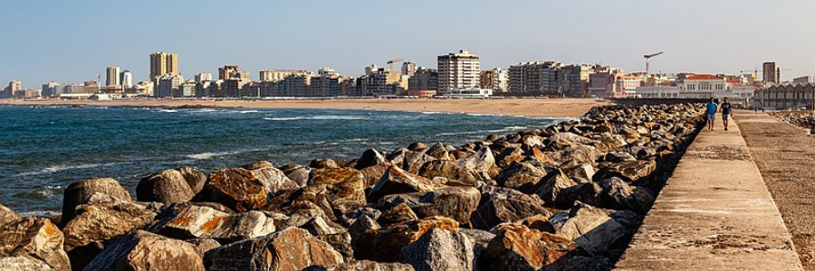

Bem-vindo a uma jornada cativante pela história da Póvoa de Varzim, uma cidade costeira de Portugal que desvenda os segredos de séculos de cultura, tradição e desenvolvimento.
A história da Póvoa de Varzim tem suas raízes na antiguidade profunda. Vestígios arqueológicos e artefatos pré-históricos revelam a presença de comunidades humanas que habitavam essa região há milhares de anos. Desde tempos remotos, a relação da Póvoa com o mar desempenhou um papel vital na vida dos seus habitantes.
Durante a Idade Média, a Póvoa de Varzim floresceu como um importante centro de atividade marítima. A pesca, o comércio marítimo e a construção de impressionantes edifícios religiosos, como a Igreja Matriz de São Pedro, definiram a cidade e sua cultura. A fé religiosa e o mar se entrelaçaram profundamente na vida dos poveiros.
À medida que o tempo avançava, a cidade crescia em importância e prosperidade. Na Era Moderna, a Póvoa de Varzim viu o desenvolvimento de uma nobreza local que deixaria sua marca na arquitetura e cultura da região. Majestosas casas senhoriais, como o Solar dos Carneiros, contam a história de uma época de esplendor.
O século XIX trouxe consigo a Revolução Industrial e a industrialização da cidade. A indústria têxtil se destacou como um pilar da economia local, criando empregos e mudando a vida dos habitantes. No século XX, a Póvoa de Varzim continuou a evoluir, abraçando a modernidade e se tornando um destino turístico de renome.
Uma das joias da Póvoa de Varzim é a sua cultura rica e diversificada. O traje poveiro é uma parte essencial da herança local, com trajes tradicionais coloridos e elaborados que são usados em ocasiões especiais. A música e a dança folclórica celebram as tradições locais, enquanto a gastronomia deliciosa, incluindo pratos de peixe fresco, conquista paladares.


Ao explorar a cidade, você encontrará uma riqueza de patrimônio histórico. Igrejas antigas, como a Igreja da Lapa, e monumentos notáveis, como o Monumento ao Pescador, lembram os dias passados. Os museus locais, como o Museu Municipal, abrigam artefatos e relíquias que narram a história da Póvoa de Varzim.
Junte-se a nós em uma jornada no tempo enquanto mergulhamos na rica história da Póvoa de Varzim, uma cidade que respeita seu passado, celebra seu presente e se lança no futuro com orgulho. Convidamos você a explorar e apreciar a diversidade cultural e o patrimônio singular desta pérola costeira de Portugal.